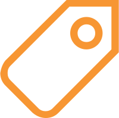
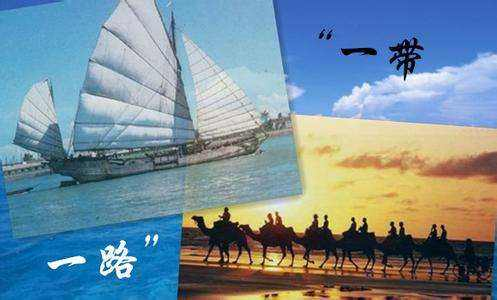
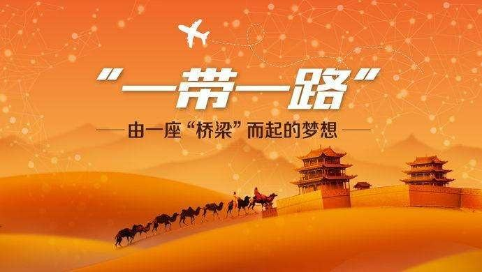
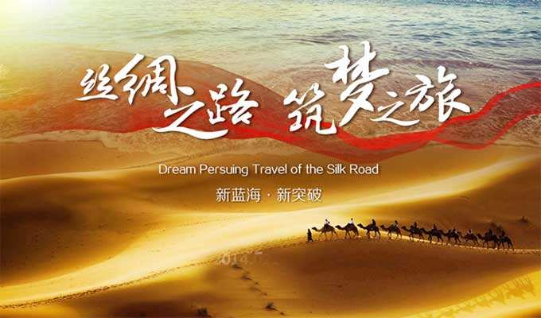
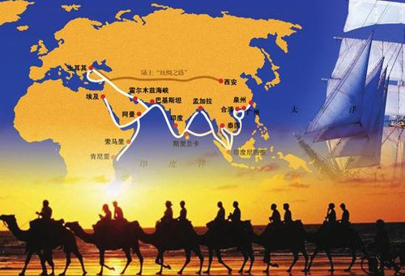

MENU
Build new roads for prosperity and development
The silk road dream weavers
Symbiosis, build a dream with the boat. In 2013, President xi put forward the "One Belt And One Road" initiative, which, while pursuing its own development, has contributed Chinese wisdom in keeping with the trend of history to the development of other countries. Over the past five years, "One Belt And One Road" has gradually moved from planning to...
International cooperation
103 countries and international organizations have signed 118 One Belt And One Road cooperation agreements with China. Trade with countries along the belt and road has exceeded us $5 trillion. Of the 279 outcomes of the first One Belt And One Road summit in...
For detailsProject cooperation
Construction has begun on some sections of the jakarta-bandung high-speed railway. Pakistan's gwadar port has resumed operations. China-laos railway and transportation infrastructure construction under the china-pakistan economic corridor progress....
For detailsFinancial services
China and 17 countries have approved the guiding principles of "One Belt And One Road" financing, and 11 Chinese Banks have set up 71 first-class institutions. China has carried out joint financing cooperation with multilateral development Banks such as...
For detailseconomic and trade
By June 2018, the number of newly signed overseas contracts in countries along the belt and road had exceeded us $500 billion, representing an annual growth rate of 19.2 percent. Chinese enterprises have built 82 overseas economic...
For details1
2
3
-
historical background
-
Build the principle
-
Cooperation priorities
-
China's actions
-
create a better future together
historical background
In line with the trend of multi-polarization, economic globalization, cultural diversity and social informatization, One Belt And One Road is committed to upholding the global free trade system and an open world economy in the spirit of open regional cooperation. The joint construction of "One Belt And One Road" aims to promote orderly and free flow of economic factors, efficient allocation of resources and deep integration of markets, promote economic policy coordination among countries along the belt and road, carry out...
Build the principle
We will abide by the purposes and principles of the UN charter. Abide by the five principles of peaceful coexistence. We will stay open and cooperate. One Belt And One Road related countries are based on but not limited to the scope of the ancient silk road. All countries and international and regional organizations can participate, so as to benefit a wider region. Harmony and inclusiveness. We should advocate tolerance among civilizations, respect the choice of development paths and models for all countries...
Cooperation priorities
Countries along the belt and road have different resource endowments and strong economic complementarities. We will focus on policy, infrastructure, trade, financial and people-to-people connectivity, and strengthen cooperation in the following areas. Strengthening policy communication is an important guarantee for the construction of "One Belt And One Road". Strengthening policy communication is an important guarantee for the construction of "One Belt And One Road". Investment and trade cooperation is the key...
China's actions
The Chinese government has actively promoted the construction of "One Belt And One Road", strengthened communication and consultation with countries along the belt and road, and promoted practical cooperation with countries along the belt and road. President xi jinping, premier li keqiang and other state leaders met with relevant heads of state and government on...
create a better future together
Jointly building "One Belt And One Road" is China's initiative and the common aspiration of China and countries along the belt and road. Standing at a new starting point, China is ready to work with countries along the belt and road to take the opportunity of the "One Belt And One Road" initiative, consult on an equal footing, accommodate the interests of all parties and reflect the aspirations of all parties, and jointly promote greater openness, exchanges and integration in a broader scope, at...
The maritime and land silk roads
The maritime and land silk roads
Also known as the south China sea silk road, it mainly centers on the south China sea.transportation, trade and cultural exchanges.
To learn moreThe overland silk road
Formed between the 2nd century BC and the 1st century AD, it was political and cultural communication between the east and the west.
To learn moreMaritime Silk Road
Also known as the south China sea silk road, it mainly centers on the south China sea. The oldest known sea route was the sea passage between ancient China and foreign countries for transportation, trade and cultural exchanges.
To learn moreThe overland silk road
Formed between the 2nd century BC and the 1st century AD, it was still in use until the 16th century. It was a main road for economic, political and cultural communication between the east and the west.
To learn moreSince the "One Belt And One Road" initiative was put forward five years ago, "One Belt And One Road" construction has achieved remarkable results in all aspects, effectively promoting China's economic and social development and opening up, and enhancing China's international influence and charisma。
In the past five years, One Belt And One Road has achieved remarkable results in six aspects
-
One Belt And One Road international cooperation summit BBS was successfully held
The One Belt And One Road summit for international cooperation held in May 2017 is the highest-level and largest multilateral diplomatic platform initiated and hosted by China since the founding of the People's Republic of China, which has aroused great response at home and abroad. Peak BBS formed 279 results in five categories. Up to now, most of them have been completed or can be converted into regular work, and the rest are being implemented in an orderly manner.
-
Strategic alignment and policy communication have been strengthened
China has signed cooperation documents on jointly building One Belt And One Road with more than 100 countries and international organizations. The "One Belt And One Road" initiative and its core concepts have been incorporated into the outcome documents of major international mechanisms including the United Nations, the g20, apec and the Shanghai cooperation organization. The One Belt And One Road initiative continues to build consensus on international cooperation, creating a favorable atmosphere for the international community to jointly build One Belt And One Road.
-
Infrastructure connectivity was accelerated
Infrastructure connectivity is the core content and priority area of "One Belt And One Road" construction. Over the past five years, the construction of efficient and unimpeded international passageways has been accelerated. Steady progress has been made in the construction of china-laos railway, china-thailand railway and hungarian-serbia railway, and the construction of jakarta-bandung high-speed railway has begun in full. The second phase of hambantota port project was completed, the construction of Colombo port city project was more than half completed, and Piraeus port was completed as an important transit hub. The china-myanmar crude oil pipeline has brought crude oil into China through the Indian Ocean. The double-track china-russia crude oil pipeline was officially put into use, and the construction of the china-russia eastern natural gas pipeline proceeded as planned. The number of trains between China and Europe has exceeded 9,000 (it is expected to exceed 10,000 this month), reaching 42 cities and 14 countries in Europe.
-
Economic, trade and investment cooperation has produced notable results
The trade and investment cooperation between China and the countries along the belt and road has been expanding, and a win-win situation has been created. In the first half of this year, the import and export volume of goods trade between China and countries along the belt and road reached 605.02 billion us dollars, up 18.8%. Non-financial direct investment in countries along the belt and road reached 7.4 billion us dollars, up 12 percent. At present, China and countries along the belt and road have built more than 80 overseas economic and trade cooperation zones, creating 244,000 local jobs. China-belarus industrial park and other cooperation zones have become models of bilateral cooperation. A large number of cooperation zones, including the china-laos cross-border economic cooperation zone and china-kazakhstan horgos international border cooperation center, are also under construction.
-
Mutual understanding between our peoples is deepening
We will implement the silk road Chinese government scholarships. We launched the One Belt And One Road international alliance for green development initiative. The official "One Belt And One Road" website has been officially launched, and the six official languages of the United Nations are running simultaneously. Cultural and people-to-people exchanges and cooperation at various levels and in various fields have brought convenience and opportunities for friendly exchanges among the people of the countries along the belt and road, as well as business, culture, education and tourism activities, and promoted mutual learning among civilizations and cultural integration and innovation.
-
The financial service system has been improved
By strengthening financial cooperation, we will promote the circulation of money and financial flows, create a stable financing environment for the construction of "One Belt And One Road", actively guide all kinds of capital to participate in the development of the real economy and the creation of value chains, and promote the healthy development of the world economy. By June 2018, China had established RMB clearing arrangements in seven countries along the belt and road. Eleven Chinese Banks have set up 71 first-tier institutions in 27 countries along the belt and road.